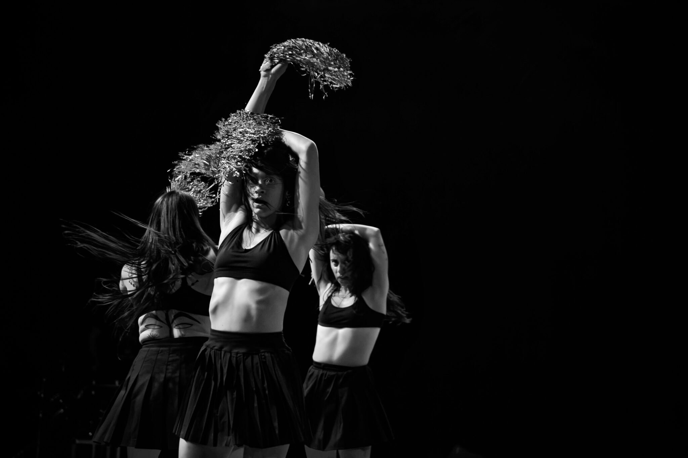
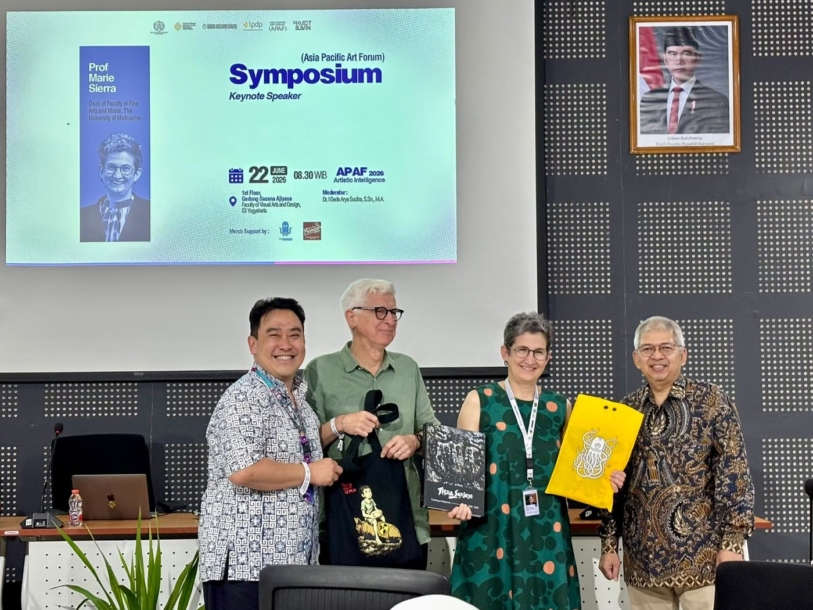
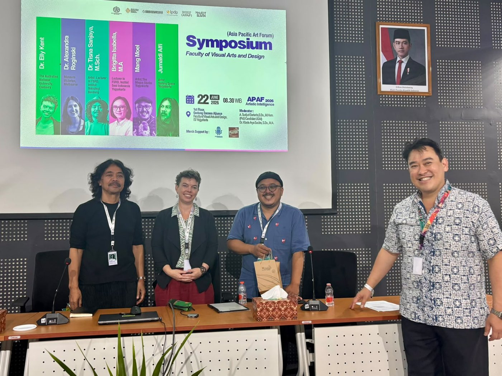
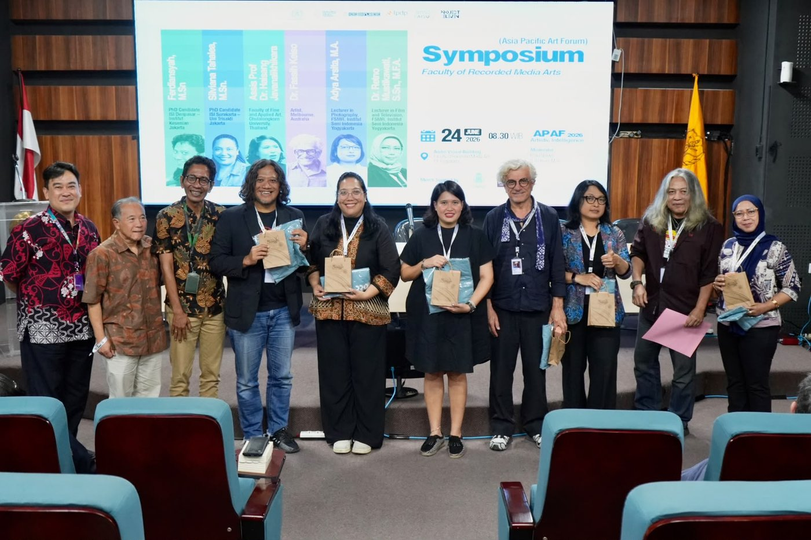
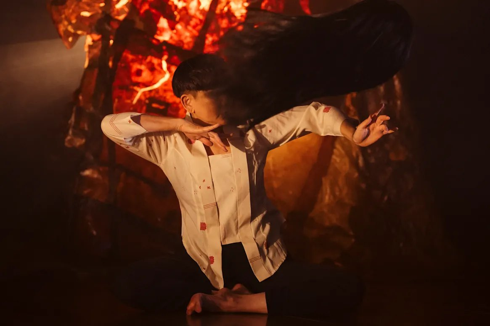
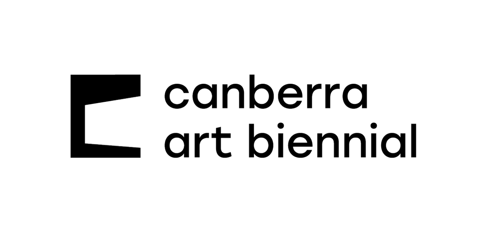
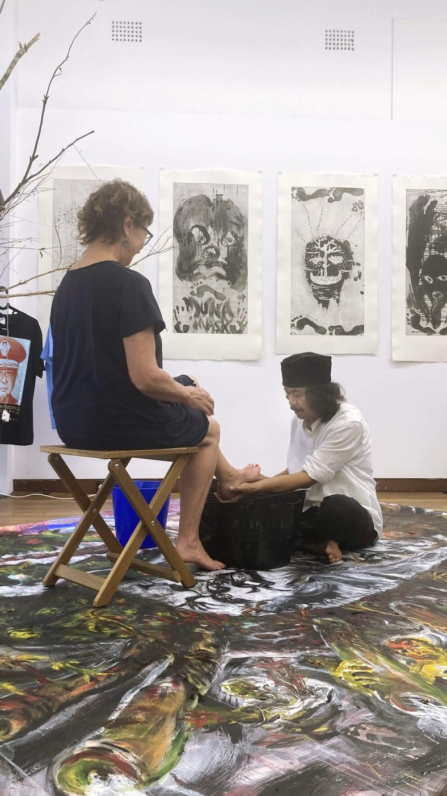
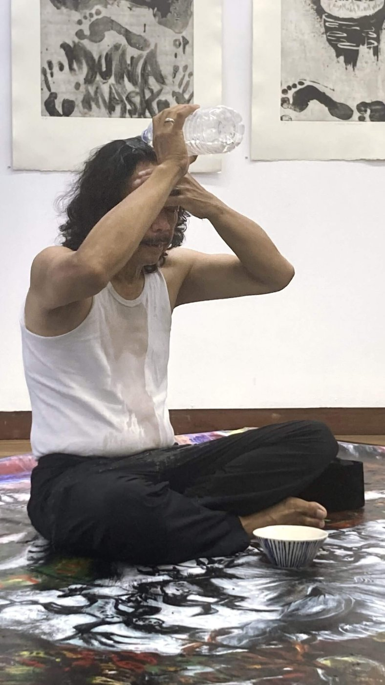
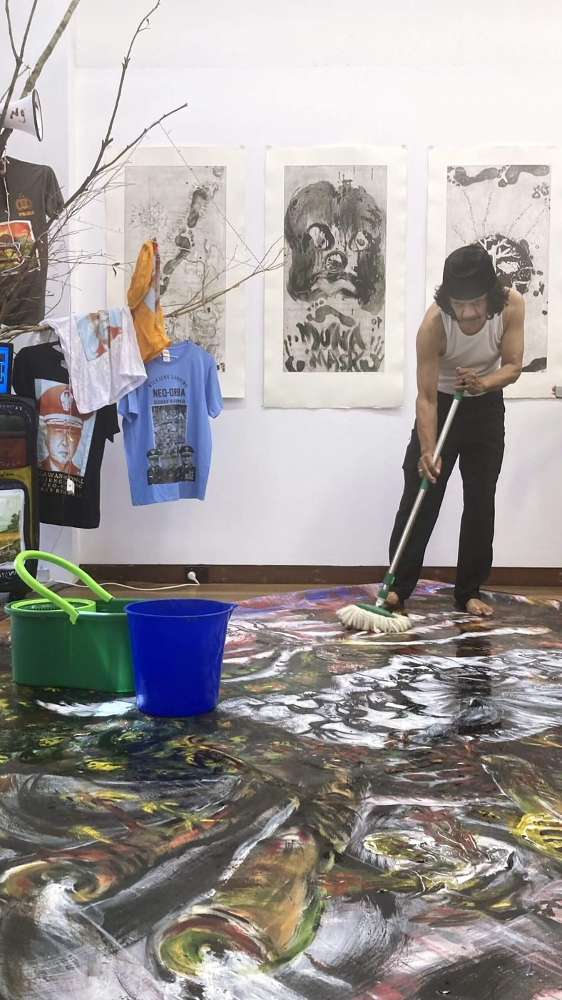
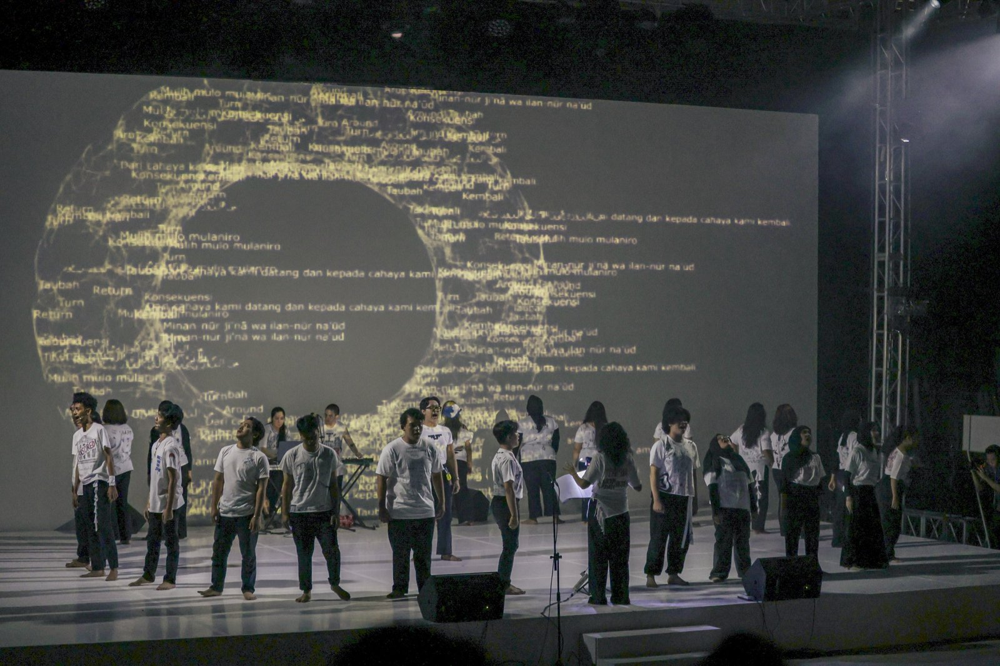

Project Eleven supported the second Asia Pacific Art Forum (APAF), presented with Institut Seni Indonesia (ISI) Yogyakarta from 19–24 June 2026. Themed Artistic Intelligence, it asked how creativity, intuition and cultural experience produce knowledge that technology alone cannot — a question opened by keynote speaker Marie Sierra, Dean of Fine Arts and Music at the University of Melbourne. Around 250 artists, academics, curators and students took part across three symposia — visual arts and design, performing arts, and recorded media arts — alongside workshops, exhibitions and performances in venues across Yogyakarta.




Project Eleven supported In Shadows (Dalam Bayang-Bayang), a wordless work of shadow puppetry, dance and live music presented by Darebin Arts Speakeasy at Northcote Town Hall Arts Centre in June 2026. Created by director Liang Luscombe, dramaturg Haneen Mahmood Martin and ethnomusicologist Isobel D’Cruz Barnes, it reimagines the pontianak — the vengeful spirit of South-East Asian folklore — through the Indonesian and Malaysian tradition of wayang kulit, with dancer Janette Hoe moving between carved leather figures and large-scale projected shadow, scored live by the five-piece ensemble Hantu. Reviewing it for The Age, Sonia Nair awarded five stars and called it “deeply observed and enchantingly visceral”.
Project Eleven supported the Melbourne Fringe Fund, which puts money directly into the hands of independent and emerging artists. Through Cash to Create it commissions new work for the festival; through Cash for Equity it lowers the barriers to taking part, covering registration fees and audience accessibility services and offering microgrants to artists facing financial hardship or structural disadvantage — with a particular focus on First Nations artists, d/Deaf and Disabled artists, and artists of colour.

Project Eleven supported the sixth Canberra Art Biennial through its Chair’s Circle. Running from 11 September to 31 October 2026, the Biennial presents contemporary public art across the designed landscape of Canberra.
Project Eleven supported Tisna Sanjaya’s residency and exhibition Cultural Amnesia at The Cross Art Projects in Sydney, from 21 February to 28 March 2026 — the Bandung artist’s first exhibition in the city. Painted in ash and tar tones drawn from Sundanese traditions, the works confront the legacy of Indonesia’s New Order dictatorship and the forgetting that followed it. At the opening Sanjaya performed Mencuci Sejarah / Washing History (Art As Prayer), washing twenty-seven painted garments and hanging them out to dry — art as a prayer for change, cleansing history of its falsehoods.



Project Eleven supported Guilty, a choral and audiovisual work by Monica Lim and Morgan May performed at the opening of ArtJog 2026. Sung by the Serenata Choir from ISI Yogyakarta, with animation and lighting by Patrick Hartono, it asks what happens when we do wrong — treating guilt as something we try to bury and reason away, but which always returns. The work was built with the choir in a single intensive week before opening night.
